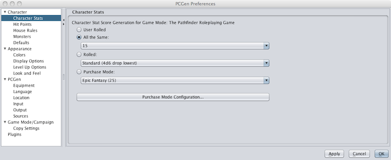
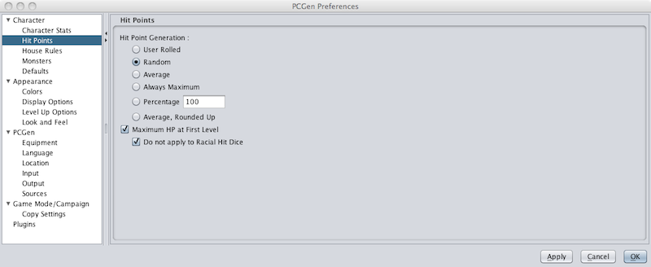
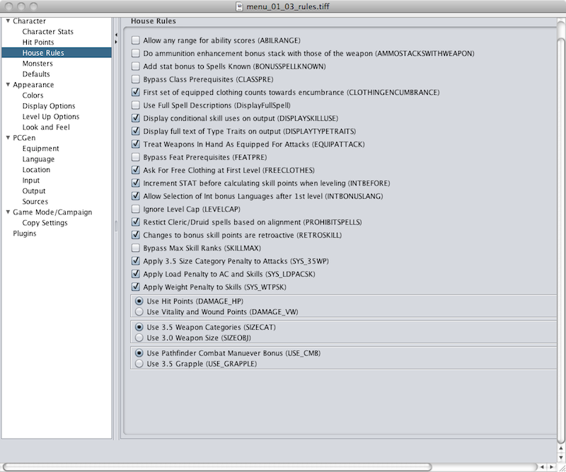
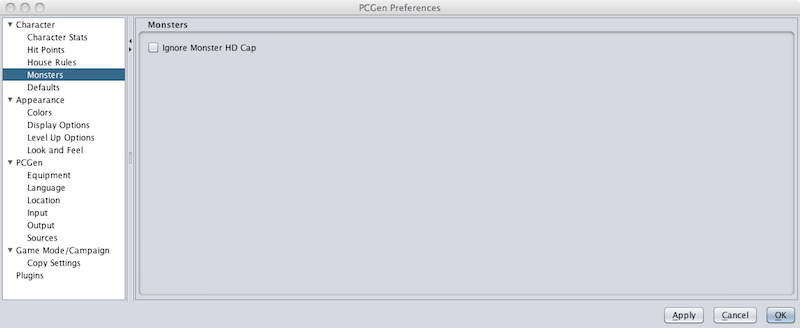
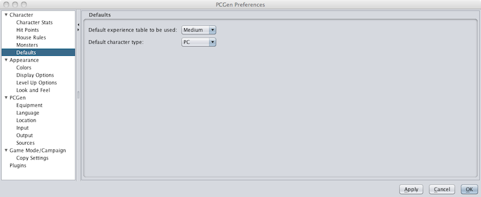

The Character Preferences allow the user to configure core character options affecting character/monster creation and advancement.

The Character Stat setting allows the user to set the method used to generate ability scores. The methods available are:

The Hit Points settings allow the user to determin how hit points are generated at first level and beyond.

The House Rules settings allow the user to configure PCgen for several commonly requested "House Rules".

The Monsters setting allows the user to set PCGen to ignore the "Monster HD Cap".

The Defaults settings allow the user to determine the default "Experience Table" and character type.